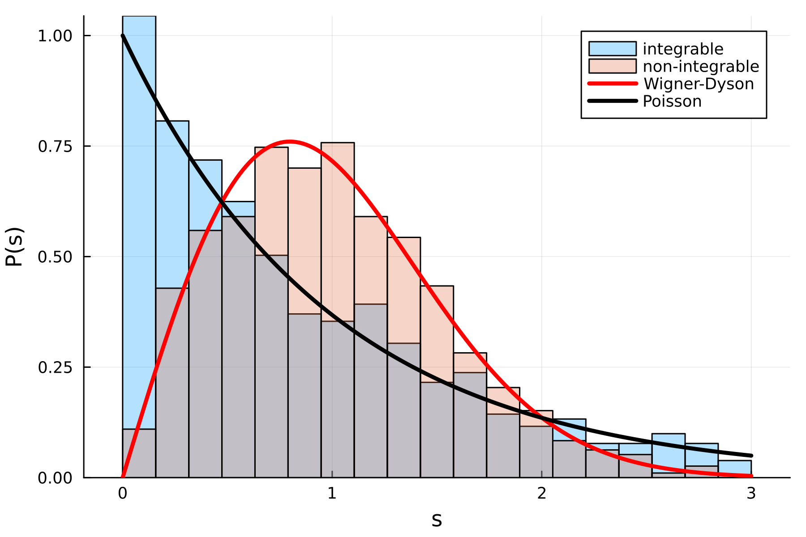

Level Statistics in Spin-\(1/2\) Chains
Author Paul Ebert
This example demonstrates the differing level statistics of integrable and non-integrable models using the example of spin-\(1/2\) chains.
The term level statistic refers to the probability distribution \(P(s)\) where the variable \(s\) is the difference between adjacent energy levels \(0 \leq E_{i+1}-E_i\). That is, for a given quantum system \(P(s)\) describes the likelihood that the next excited state above a randomly chosen energy level \(E\) has energy \(E + s\). To ensure comparability across different systems, one typically normalizes the level spacings by its mean value \(\tilde{s} = s/ \bar{s}\) and considers \(P(\tilde{s})\). Since this is the standard procedure, we will assume that \(P(s)\) is the distribution of the normalized energy differences below instead of writing \(P(\tilde{s})\).
It is well established that for integrable systems (i.e. those with conserved quantities) the level statistic is a Poissonian $$ P_{\mathrm{Poiss}}(s) = \exp(-s) $$ whereas the so-called Wigner-Dyson distribution emerges for non-integrable systems $$ P_{\mathrm{WD}}(s) = \frac{\pi s}{2} \exp(- \pi s^2/4). $$ Intuitively speaking, this is because having a system with symmetries and associated conserved quantities leads to degeneracies that contribute to seeing \(s=0\) very often such that \(P_{\mathrm{Pois}}(0) > 0\). On the contrary, the energy levels of non-integrable systems are approximately randomly distributed (especially in the bulk of the spectrum), giving a distribution satisfying \(P_{\mathrm{WD}}(0) = 0\).
To showcase this, we inspect two spin-\(1/2\) Hamiltonians on a chain, one being the integrable XXZ model
while the second merely adds a next-nearest-neighbor interaction
and becomes "non-integrable". We must put "non-integrable" in quotes here, since strictly speaking both models are integrable. However, the \(\mathcal{H}_{\mathrm{ni}}\) system becomes non-integrable once the trivial spin-flip, mirror, and translation symmetries (we employ periodic boundary conditions) are removed. This is done by considering specific sectors of the total Hilbert space which is easily done in XDiag.
The code below demonstrates how the level statistics of these systems can be computed inside the sectors where all trivial symmetries are removed. The Julia version also contains a simple plotting method, leading to the following distribution of level statistics:

#include <xdiag/all.hpp>
using namespace xdiag;
std::complex<double> C_N_character(int N, int k, int p){
return std::exp( ( (2 * k * p) * M_PI / (double)N ) * std::complex<double>(0,1.) );
};
std::vector<double> compute_level_statistics(int N, OpSum H){
// fix magnetization (Sztot = 0 still has spin-flip symmetry!)
int Nup = N/2 + 1;
// fix lattice momentum (k = 0, N/2 still have parity symmetry!)
int k = 1;
std::vector<int64_t> T_perm (N, 0);
for (int i=0; i<N-1; i++){
T_perm[i] = i + 1;
};
auto T = Permutation(T_perm);
std::vector<Permutation> perms (N);
for (int i=0; i<N; i++){
perms[i] = pow(T, i);
};
auto C_N = PermutationGroup(perms);
std::vector< std::complex <double> > irrep_k_characters (N, 0.0);
for (int p=0; p<N; p++){
irrep_k_characters[p] = C_N_character(N, k, p);
};
auto irrep_k = Representation(C_N, irrep_k_characters);
// block of Hamiltonian without remaining symmetries
auto block = Spinhalf(N, Nup, irrep_k);
// find its eigenspectrum
arma::cx_mat Hmat = matrixC(H, block);
arma::vec eigenvalues = eig_sym(Hmat);
// compute level statistics (taking only the inner most half of spectrum)
int N_levels = eigenvalues.n_elem;
int s_start = (int)(0.25 * N_levels);
int s_stop = (int)(0.75 * N_levels);
int s_num = s_stop - s_start;
std::vector<double> s_arr (s_num);
double s_arr_sum = 0.0;
for (int i=0; i<s_num; i++){
s_arr[i] = eigenvalues[s_start+i+1] - eigenvalues[s_start+i];
s_arr_sum += s_arr[i];
}
s_arr_sum = s_arr_sum / s_num;
// normalize
for (int i=0; i<s_num; i++){
s_arr[i] = s_arr[i] / s_arr_sum;
}
return s_arr;
}
int main() try {
int N = 18; // length of spin chain
// definition of integrable model
auto H_i = OpSum();
for (int i=0; i<N; i++){
H_i += "J" * Op("SzSz", {i, (i+1)%N});
H_i += "Delta" * Op("Exchange", {i, (i+1)%N});
}
// definition of non-integrable model
auto H_ni = OpSum();
for (int i=0; i<N; i++){
H_ni += "J" * Op("SzSz", {i, (i+1)%N});
H_ni += "Delta" * Op("Exchange", {i, (i+1)%N});
H_ni += "J2" * Op("SzSz", {i, (i+2)%N});
}
// assign coupling values
double J, Delta, J2;
J = 1.0;
Delta = J2 = 0.5;
H_i["J"] = H_ni["J"] = J;
H_i["Delta"] = H_ni["Delta"] = Delta;
H_ni["J2"] = J2;
// compute level statistics (remember to eliminate trivial symmetries!)
std::vector<double> H_i_statistics = compute_level_statistics(N, H_i);
std::vector<double> H_ni_statistics = compute_level_statistics(N, H_ni);
// do something with H_i_statistics and H_ni_statistics here (Julia version has a plotting routine)
return 0;
} catch(Error e) {
error_trace(e);
}
using XDiag
using LinearAlgebra # exact diagonalization
using Plots # optional: plot histograms
function main()
N = 18
# definition of integrable model
H_i = OpSum()
for i in 1:N
H_i += "J" * Op("SzSz", [i,mod1(i+1, N)])
H_i += "Delta" * Op("Exchange", [i, mod1(i+1, N)])
end
# definition of non-integrable model
H_ni = OpSum()
for i in 1:N
H_ni += "J" * Op("SzSz", [i, mod1(i+1, N)])
H_ni += "Delta" * Op("Exchange", [i, mod1(i+1, N)])
H_ni += "J2" * Op("SzSz", [i, mod1(i+2, N)])
end
# assign coupling values
J = 1.0
Delta = J2 = 0.5
H_i["J"] = H_ni["J"] = J
H_i["Delta"] = H_ni["Delta"] = Delta
H_ni["J2"] = J2
# compute level statistics (remember to eliminate trivial symmetries!)
H_i_statistics = compute_level_statistics(N, H_i)
H_ni_statistics = compute_level_statistics(N, H_ni)
# optional plot of histograms (only in Julia version!)
plot_histograms(H_i_statistics, H_ni_statistics)
end
function compute_level_statistics(N::Int, H::OpSum) :: Vector{Float64}
# fix magnetization (Sz_tot = 0 still has spin-flip symmetry!)
Nup = N2 + 1
# fix lattice momentum (k = 0, N/2 still have parity symmetry!)
k = 1
T = Permutation(circshift(1:N, -1))
C_N = PermutationGroup([T^p for p in 0:(N-1)])
irrep_k_characters = [C_N_character(N, k, p) for p in 0:(N-1)]
irrep_k = Representation(C_N, irrep_k_characters)
# block of Hamiltonian without remaining symmetries
block = Spinhalf(N, Nup, irrep_k)
# find its eigenspectrum
Hmat = matrix(H, block)
eigenvalues = eigvals(Hermitian(Hmat))
# compute level statistics (taking only inner most half of spectrum)
N_levels = size(block)
s_start = trunc(Int, 0.25*N_levels)
s_stop = trunc(Int, 0.75*N_levels)
s_num = s_stop - s_start
s_arr = Vector{Float64}(undef, s_num)
s_arr_sum = 0.0
for i in 1:s_num
s_arr[i] = eigenvalues[s_start+i+1] - eigenvalues[s_start+i]
s_arr_sum += s_arr[i]
end
# normalize
return s_arr / (s_arr_sum / s_num)
end
function C_N_character(N::Int, k::Int, p::Int)
return exp( im * 2 * pi * p * k * 1.0 / N )
end
function plot_histograms(integ_stat::Vector{Float64}, noninteg_stat::Vector{Float64})
# plot histograms
smax = 3
Nbins = 20
bins = LinRange(0, smax, Nbins)
histogram(
[integ_stat noninteg_stat],
bins=bins,
normalize=:pdf,
fillalpha=0.3,
label=["integrable" "non-integrable"],
xlabel="s",
ylabel="P(s)"
)
# plot Wigner Dyson distribution
x_vals = LinRange(0, smax, 200)
WD_y_vals = WD_func.(x_vals)
plot!(x_vals, WD_y_vals, color=:red, linewidth=3, label="Wigner-Dyson")
# plot Poisson distribution
Pois_y_vals = Poisson_func.(x_vals)
plot!(x_vals, Pois_y_vals, color=:black, linewidth=3, label="Poisson")
end
function WD_func(s::Float64) :: Float64
return (pi*s/2) * exp(-pi*s^2/4)
end
function Poisson_func(s::Float64) :: Float64
return exp(-s)
end
main()